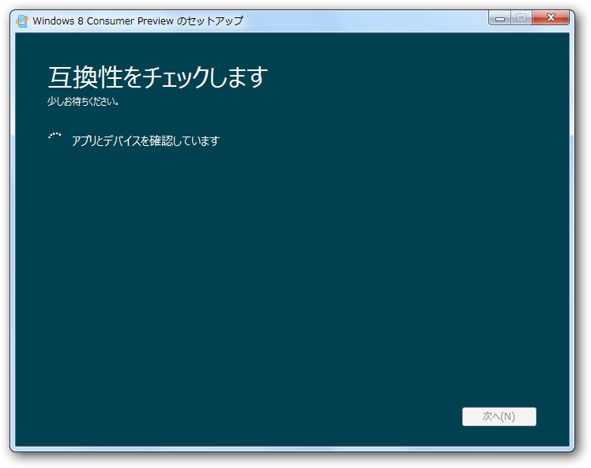
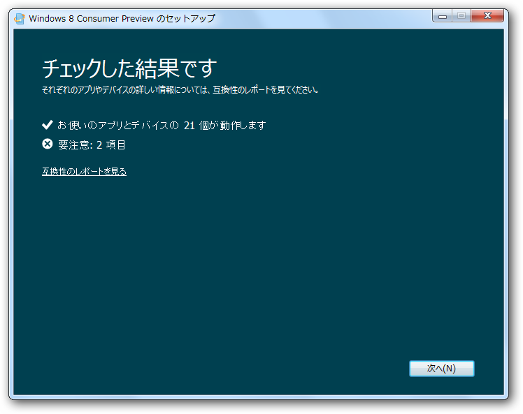
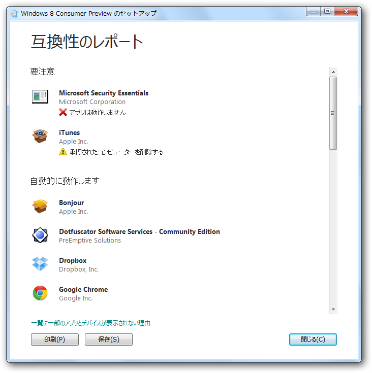
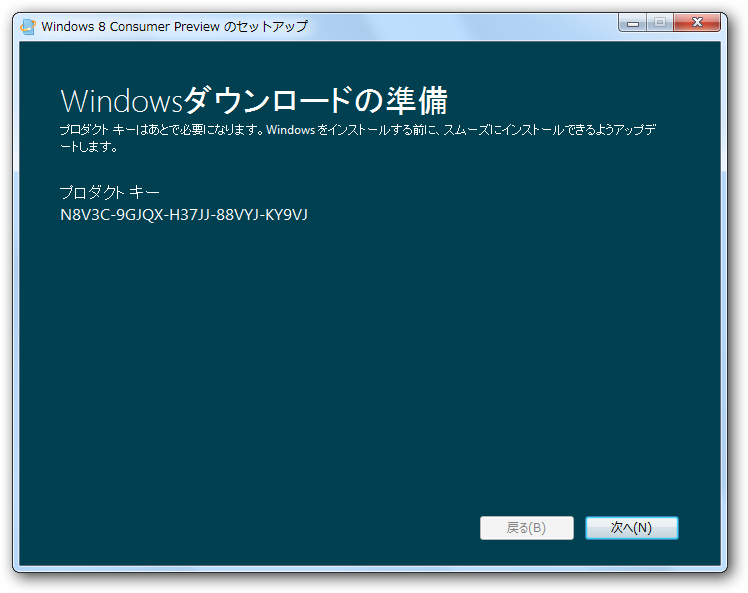
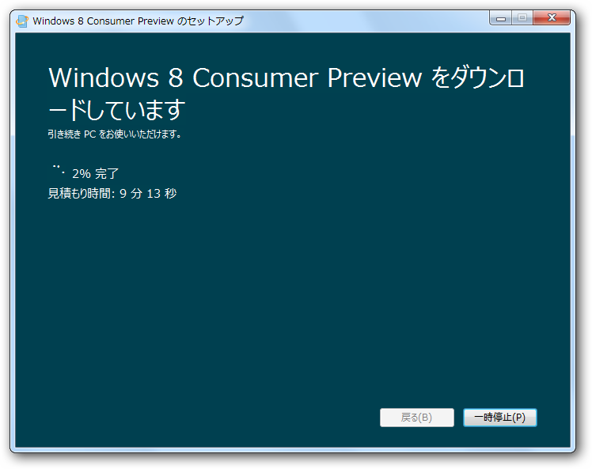
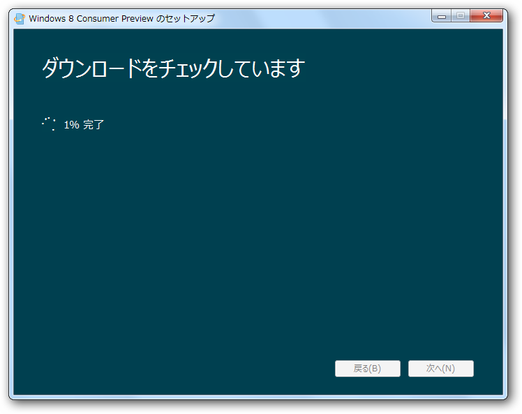
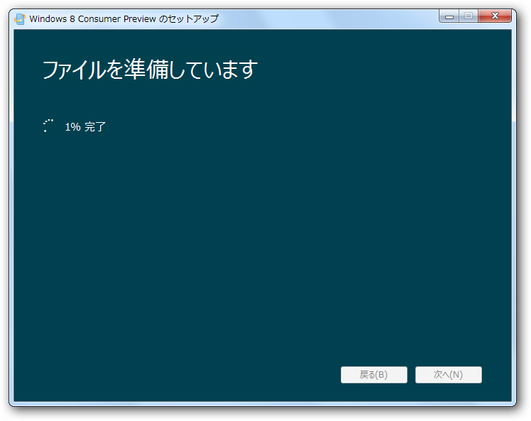
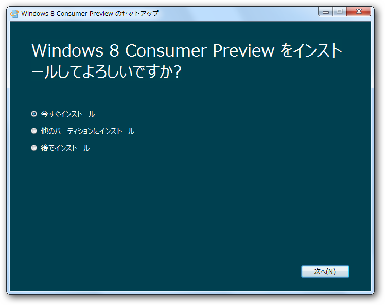

Windows 8 Consumer Preview （途中までインストールした）
公開日：
Windows 8 は、Windows 7 の処理速度と信頼性を基に、刷新された Windows です。まったく新しいタッチ インターフェイスが搭載されました。新しいデバイス向けの新しい Windows です。新機能を最初に試すチャンスです。
日本語サイトまでしっかり用意されていて、マイクロソフトのやる気を感じさせますね！*1 ISOも用意されているけれど、ここはまず正統的にインストーラーを使ってみました。

互換性のチェック。

チェックの結果。うちの環境では2つのアプリがひっかかった。

チェックの結果。Microdost Security Essential（MSE）が使えないのは痛い。ウイルス対策を無償で済ましたいのならば、「アバスト！」あたりを使うことになる。*2
窓の杜 - 【NEWS】無償ウイルス対策ソフト「アバスト! 無料アンチウイルス 7」が正式公開

プロダクトキー。あとで必要になるのでコピっておくこと。Webサイトにも記載されていた気がする。

ファイルのダウンロード。

ダウンロードの検証。

ファイルの展開。

ここまでで約30分といったところか。回線速度によってはもっと時間がかかると思う。
ここまできて、ちょっと困った。既存の環境をぶっ壊しちゃうのかな？ とりあえずVHDブートを試してみる。